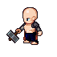
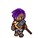

Map of the Ministry
Personnel
All Personnel
On mission
Overseeing
Idle
The Needles
- 4 Mines/Refineries
- 3 Building Sites
- 1 Training Grounds
- 1 Vehicle Factory
On mission:
Overseeing:

Amahle
Status: Idle
- Diplomacy: 20
- Combat: 70
- Espionage: 10
- Leadership: 70